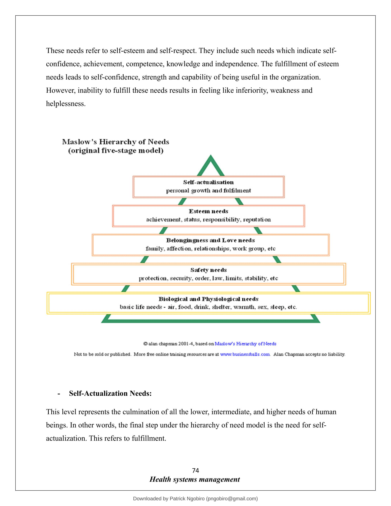

Chapter 3: Management of Resources (Part 4)
MOTIVATION THEORIES.
From the very beginning, when the human organizations were established, various thinkers have tried to find out the answer to what motivates people to work. Different approaches applied by them have resulted in a number of theories concerning motivation. Thus, we have;
- Maslow's Hierarchy of Need theory.
- Herzberg's Motivation Hygiene theory.
- McClelland's Need theory.
- McGregor's Participation theory.
- Urwick's theory Z.
- Argyris's theory (growth).
- Vroom's Expectancy theory.
- Porter and Lawler's Expectancy theory.
1. Maslow's Hierarchy of Need Theory:
The most well-known theory of motivation is Maslow's hierarchy of need theory. It is based on the human needs. Maslow classified all human needs into a hierarchical manner from the lower to the higher order. He believed that once a given level of need is satisfied, it no longer serves to motivate man. The next higher level of need has to be activated in order to motivate the man. Maslow identified five levels in his hierarchy of need as shown-
- Physiological Needs:
These needs are basic to human life and, hence, include food, clothing, shelter, air, water and necessities of life. These needs relate to the survival and maintenance of human life. They exert tremendous influence on human behavior. These needs are to be met first at least partly before higher level needs emerge. Once physiological needs are satisfied, they no longer motivate the man.
- Safety Needs:
After satisfying the physiological needs, the next needs felt are called safety and security needs. These needs find expression in such desires as economic security and protection from physical dangers. Meeting these needs requires more money and, hence, the individual is prompted to work more. Like physiological needs, these become inactive once they are satisfied.
- Social Needs - (belongingness and love needs).
Man is a social being. He is, therefore, interested in social interaction, companionship, belongingness, etc. It is this socializing and belongingness why individuals prefer to work in groups and especially older people go to work.
4. Esteem Needs:
These needs refer to self-esteem and self-respect. They include such needs which indicate selfconfidence, achievement, competence, knowledge and independence. The fulfillment of esteem needs leads to self-confidence, strength and capability of being useful in the organization. However, inability to fulfill these needs results in feeling like inferiority, weakness and helplessness.
Maslow's Hierarchy of Needs (original five-stage model)
Belonginguess and Love needs
family, affection, relationships, work group, etc
Safety needs
protection, security, order, law, limits, stability, etc
Biological and Physiological needs
basic life needs - air, food, drink, shelter, warmth, sex, sleep, etc.
Salan chapman 2001-4, based on Maslow's Hierarchy of Needs
Not to be sold or published. More free online training resources are at www.businessballs.com. Alan Chapman accepts no liability.
- Self-Actualization Needs:
This level represents the culmination of all the lower, intermediate, and higher needs of human beings. In other words, the final step under the hierarchy of need model is the need for selfactualization. This refers to fulfillment.
The term self-actualization was coined by Kurt Goldstein and means to become actualized in what one is potentially good at. Self- actualization is the person's motivation to transform perception of self into reality.
According to Maslow, the human needs follow a definite sequence of domination. The second need does not arise until the first is reasonably satisfied, and the third need does not emerge until the first two needs have been reasonably satisfied and it goes on. The other side of the hierarchy of need is that human needs are unlimited.
The main criticisms of the theory include the following:
The needs may or may not follow a definite hierarchical order. So to say, there may be overlapping in need hierarchy. For example, even if safety need is not satisfied, the social need may emerge. Researches show that man's behaviour at any time is mostly guided by multiplicity of behavior.
2. Herzberg's Motivation Hygiene Theory:
The psychologist Frederick Herzberg extended the work of Maslow and proposed a new motivation theory popularly known as Herzberg's Motivation Hygiene Theory. The main use of his recommendations lies in planning and controlling of employees work.
According to Herzberg, the opposite of satisfaction is not dissatisfaction. The underlying reason, he says, is that removal of dissatisfying characteristics from a job does not necessarily make the job satisfying. The opposite of 'satisfaction' is 'no satisfaction' and the opposite of 'dissatisfaction' is 'no dissatisfaction'.
The theory basically explains job satisfaction, not motivation and this theory neglects situational variable to motivate an individual.
3. McClelland's Need Theory:
Another well-known need-based theory of motivation, as opposed to hierarchy of needs of satisfaction-dissatisfaction, is the theory developed by McClelland and his associates'.
McClelland's need-theory is closely associated with learning theory, because he believed that needs are learned or acquired by the kinds of events people experienced in their environment and culture. He found that people who acquire a particular need behave differently from those who do not have. His theory focuses on Murray's three needs; achievement, power and affiliation.
4. McGregor's Participation Theory:
Douglas McGregor formulated two distinct views of human being based on participation of workers. The first basically negative, labeled Theory X, and the other basically positive, labeled Theory Y.
Theory X is based on the following assumptions:
- People are by nature indolent. That is, they like to work as little as possible.
- People lack ambition, dislike responsibility, and prefer to be directed by others.
- People are inherently self-centered and indifferent to organizational needs and goals.
- People are generally gullible and not very sharp and bright.
On the contrary, Theory Y assumes that:
- People are not by nature passive or resistant to organizational goals.
- They want to assume responsibility.
- They want their organization to succeed.
- People are capable of directing their own behavior.
- They have need for achievement.
5. Urwick's Theory Z:
Much after the propositions of theories X and Y by McGregor, the three theorists Urwick, Rangnekar and Ouchi-propounded the third theory labeled as Z theory.
The two propositions in Urwicks's theory are that:
- Each individual should know the organizational goals precisely and the amount of contribution through his efforts towards these goals.
- Each individual should also know that the relation of organizational goals is going to satisfy his/her needs positively.
In Urwick's view, the above two make people ready to behave positively to accomplish both organizational and individual goals.
Theory Z is based on the following four postulates:
- Strong Bond between Organization and Employees.
- Employee Participation and Involvement.
- No Formal Organization Structure.
- Human Resource Development.
6. Argyris's Theory:
Argyris has developed his motivation theory based on proposition how management practices affect the individual behaviour and growth. In his view, the seven changes taking place in an individual personality make him/her a mature one. In other words, personality of individual develops
| Immaturity | Maturity |
|---|---|
| Passivity | Activity |
| Dependence | Independence |
| Capable of behaving in a few ways | Capable of behaving in many ways |
| Shallow interest | Deep interest |
| Short-term perspective | Long-term perspective |
| Subordinate position | Superordinate position |
| Lack of self-awareness | Self-awareness and control |
Argyris views that immaturity exists in individuals mainly because of organizational setting and management practices such as task specialization, chain of command, unity of direction, and span of management. In order to make individuals grow mature, he proposes gradual shift from the existing pyramidal organization structure to humanistic system; from existing management system to the more flexible and participative management.
7. Vroom's Expectancy Theory:
One of the most widely accepted explanations of motivation is offered by Victor Vroom in his Expectancy Theory" It is a cognitive process theory of motivation. The theory is founded on the basic notions that people will be motivated to exert a high level of effort when they believe there are relationships between the effort they put forth, the performance they achieve and the outcomes or rewards they receive.
The relationships between notions of effort, performance, and reward are depicted below;

Fig 17.3: Vroom's Expectancy Model of Motivation
Thus, the key constructs in the expectancy theory of motivation are:
- Valence: Valence, according to Vroom, means the value or strength one places on a particular outcome or reward.
- Expectancy: It relates efforts to performance.
- Instrumentality: By instrumentality, Vroom means, the belief that performance is related to rewards.
Thus, Vroom's motivation can also be expressed in the form of an equation as follows:
Motivation = Valence x Expectancy x Instrumentality.
8. Porter and Lawler's Expectancy Theory:
Porter and Lawler's theory is an improvement over Vroom's expectancy theory. They posit that motivation does not equal satisfaction or performance. The model suggested by them encounters some of the simplistic traditional assumptions made about the positive relationship between satisfaction and performance. They proposed a multi-variety model to explain the complex relationship that exists between satisfaction and performance.
The main point in Porter and Lawler's model is that effort or motivation does not lead directly to performance. It is intact, mediated by abilities and traits and by role perceptions. Ultimately, performance leads to satisfaction.
There are three main elements in this model. Thus;
Effort:
Effort refers to the amount of energy an employee exerts on a given task. How much effort an employee will put in a task is determined by two factors-
- Value of reward.
- Perception of effort-(reward probability).
Performance:
One's effort leads to his/her performance. Both may be equal or may not be. However the amount of performance is determined by the amount of labour and the ability and role perception of the employee.
Satisfaction:
Performance leads to satisfaction. The level of satisfaction depends upon the amount of rewards one achieves. If the amount of actual rewards meet or exceed perceived equitable rewards, the employee will feel satisfied. On the country, if actual rewards fall short of perceived ones, he/she will be dissatisfied.